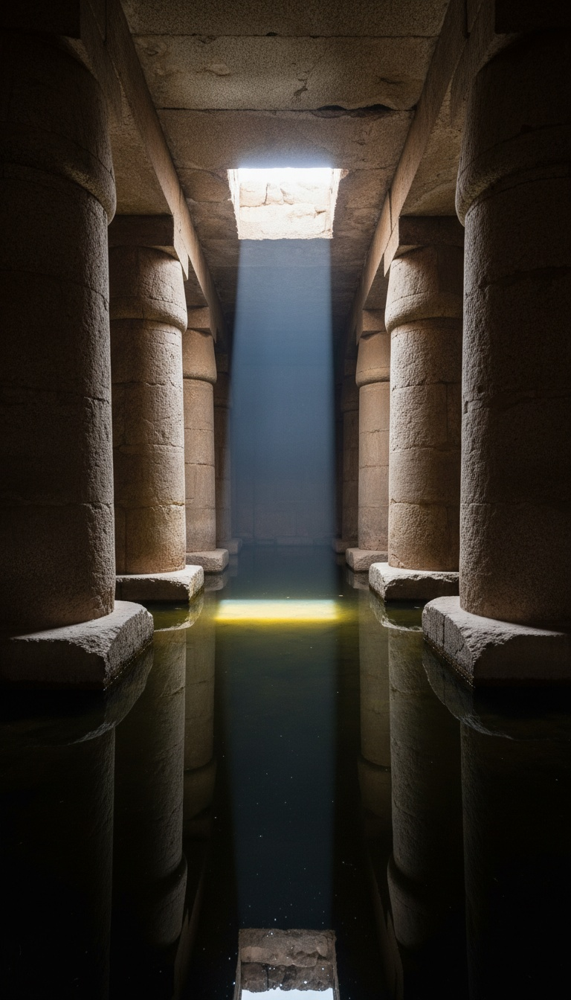

An Egyptian king carved his name on every wall of every temple he built. Every wall except one.
The Osireion sits behind the Temple of Seti I at Abydos, cut from hundred-ton granite blocks, sunk permanently below the Nile water table, and covered in absolutely nothing. No text. No cartouche. No date. Pharaoh Seti I ruled Egypt from approximately 1279 BC, and his name covers the temple directly overhead. The Osireion has bare stone and silence.

The Building That Was Designed to Flood
The Osireion is not a ruin. It was built this way. The floor sits permanently below the Nile water table, and researchers from the University of Chicago's Oriental Institute documented standing water inside the structure across multiple survey seasons throughout the twentieth century. A rectangular island of stone rises at the center of the chamber, surrounded by a channel of water that fills from below. That configuration has one known parallel in ancient Egyptian cosmology: the primordial mound rising from the waters of Nun at the moment of creation. No temple confirmed to Seti I's construction period uses this design. The New Kingdom did not build monuments engineered to flood.
The Granite Is Not From Here
The blocks are granite. Not local limestone. Not Abydos sandstone. Granite hauled from Aswan, nine hundred kilometers south, each block weighing between fifty and one hundred tons. The Egyptian Antiquities Organization holds the structural survey. The cutting face on each block shows flat planes, tight joints, and no mortar. Compare that to the Temple of Seti I directly overhead: limestone and sandstone, plastered, painted, inscribed edge to edge with hieroglyphic text and full-color relief carvings. The same pharaoh built both structures. He used different materials, a completely different structural logic, a different hydrological design, and then carved nothing on the granite one. Egyptologists at Cairo University point to mud brick enclosure walls nearby. Those walls carry Seti's cartouche. The granite does not.
Flinders Petrie Said It First and Said It in Print
Sir Flinders Petrie excavated at Abydos between 1902 and 1903. Petrie is the founder of modern scientific field archaeology in Egypt. The Petrie Museum at University College London holds his original field notebooks, open to researchers. In his published site report, Petrie described the Osireion as the most ancient piece of architecture in Egypt. He based that on the stoneworking style, the block dimensions, the construction technique, and the complete absence of inscription. Margaret Murray, working the same excavation in 1903, published separately in the Journal of Egyptian Archaeology that the structure predated the temple above it on structural grounds alone. Two of the most credentialed field archaeologists of the nineteenth century examined the same granite and reached the same conclusion. Neither one appears in the current official site description posted at Abydos.
Petrie called it the most ancient piece of architecture in Egypt. He does not appear in the official site description posted at Abydos today.
The Mud Layer Dates the Mud, Not the Granite
The dating of the Osireion to Seti I rests on one argument: a layer of New Kingdom mud brick found above and around the granite structure, with cartouches of Seti I pressed into the brickwork. The Supreme Council of Antiquities has used this layer to fix construction at approximately 1279 BC. That argument assumes the mud brick and the granite were built simultaneously. It does not prove it. The mud brick enclosure is a New Kingdom addition built around a pre-existing structure. The granite core carries no cartouche, no dated inscription, no datable material that ties it to any specific dynasty. Stratigraphy dates a layer by what is found above it. When the older structure was already there, the later layer dates the addition, not the foundation. Seti I's architects found something at Abydos and built around it.
The Valley Temple at Giza Is the Same Building
The Valley Temple at Giza dates to approximately 2500 BC. It is built from the same material as the Osireion: massive granite blocks, precise joints, no mortar, flat planes. Egyptologist Mark Lehner at Harvard documented the Valley Temple's architectural grammar in his 1985 survey. Every element Lehner documented appears again at the Osireion. The internal T-shaped hall layout. The horizontal granite ceiling beams spanning vertical granite pillars. The monolithic scale and the complete absence of painted decoration. The Valley Temple is twelve hundred years older than Seti I. It is nine hundred kilometers north of Abydos. The same construction logic appears in both structures, and in neither one does it appear anywhere else in the confirmed New Kingdom record. Seti I built the Temple of Seti I in limestone. He did not switch to megalithic granite for one structure and then forget to carve his name on it.
Nobody Has Answered the Blank Walls
Every pharaoh in Egyptian history carved his name on every surface he owned. Ramesses II carved his name over earlier pharaohs' cartouches. Akhenaten chiseled out predecessor names and replaced them. Thutmose III did the same across Hatshepsut's monuments at Karnak. Seti I left his cartouche on the Temple of Amun at Karnak, on the Abydos King List inside his own temple seventy meters away, and on the mud brick walls directly surrounding the Osireion. He did not leave it on the Osireion granite. The building is structurally complete. The walls are not rough. They are polished, finished, and empty. The Egyptology faculty at Brown University classifies the blank walls as intentional archaism: Seti I built in the old style and chose not to decorate. That explanation requires accepting that the most inscription-driven civilization in human history deliberately left its most sacred structure at its most sacred city completely blank. Seti I is buried in tomb KV17 in the Valley of the Kings. His tomb has text on every centimeter of every surface, floor to ceiling.
The Osireion sits under half a meter of standing water for most of the year. Independent survey access has been restricted by the Egyptian government since 2011. The last full photogrammetric scan was published by the American Research Center in Egypt in 2007. No comparable scan has been released since.
Petrie's notebooks are at UCL. The 1903 survey photographs are in the archive. The granite blocks are attributed to Seti I by the mud built around them, not by anything on the granite itself. The blank walls have no explanation that survives contact with every other monument Seti I built. Something was at Abydos before the New Kingdom arrived. Seti I built a temple around it, built enclosure walls around those walls, and pressed his cartouche into every surface except the thing he was actually building around. The question is not why he left it blank. The question is what was already there that made him decide not to touch it.
Before you go
7 books the Vatican doesn't want you reading. Free PDF — the texts they cut, with sources. Joined by 140+ Inner Circle members.
No spam. Unsubscribe anytime.
Go deeper
The Hidden Canon, Vol. I — Enoch. Jubilees. Thomas. Mary. Judas. 90 pages, 14 chapters, every receipt cited. The books your Bible quietly removed.
Read the Canon →Books that informed this investigation
As an Amazon Associate, Hidden Epoch earns from qualifying purchases. Cost to you: nothing.
Research safely
The VPN we use to research without being tracked. First 3 months free.
Get NordVPN →